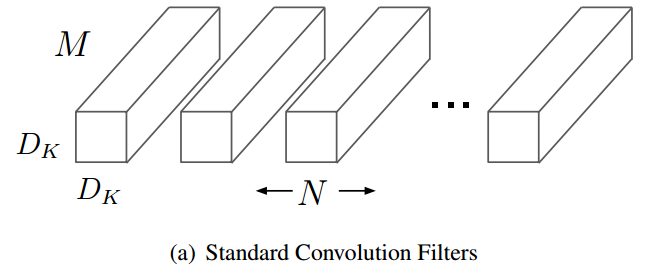
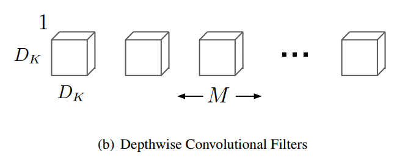
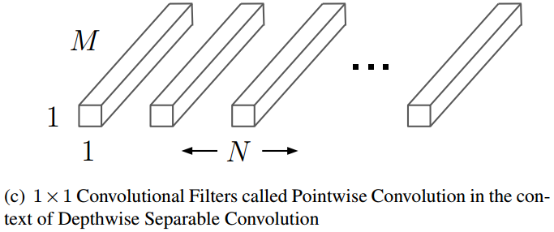

Giới thiệu
Qua các mô hình đã được giới thiệu như VGG, GoogLeNet hay ResNet thì ta thấy rằng chúng đều được phát triển theo hướng tăng dần độ sâu và độ phức tạp tính toán của mô hình để đạt được độ chính xác cao hơn, kể từ khi AlexNet được công bố. Số lượng tham số của chúng là rất lớn.
Tuy nhiên, các ứng dụng AI trong thực tế như robotics, xe tự hành thì các phép tính toán của mô hình cần được thực hiện trong một khoảng thời gian giới hạn, cùng với tài nguyên phần cứng hạn chế. Do đó, ta phải đối mặt với một trade-off giữa độ chính xác và độ trễ, kích thước mô hình.
Vào thời điểm này, có 2 hướng giải pháp chính để có thể đưa các mô hình vào ứng dụng thực tế như sau:
- Nén các mô hình phức tạp lại thông qua các phương pháp như lượng tử hóa (quantization), hashing, cắt tỉa mô hình
- Xây dựng và huấn luyên các mô hình nhỏ, độ phức tạp thấp ngay từ đầu.
MobileNet được phát triển theo hướng thứ 2, trong đó, nó tập trung vào các yếu tố:
- Vừa đảm bảo kích thước mô hình đủ nhỏ, tốc độ suy diễn đủ nhanh (độ trễ thấp) và với độ chính xác đủ cao.
- Cung cấp hai siêu tham số cho phép ta điều chỉnh trade-off giữa độ chính xác và độ trễ, kích thước mô hình: width multiplier (liên quan đến số channel trong từng layer) và resolution multiplier (width và height trong từng layer)
Depthwise separable convolutions
MobileNet được xây dựng từ các layer convolution khá đặc biệt, chúng được gọi là depthwise separable convolutions. Depthwise separable convolution được tạo ra từ hai phép toán:
- Depthwise convolution: Áp dụng từng filter cho từng channel của input. Nếu input có bao nhiêu channel thì ta sẽ có bấy nhiêu filter.
- Pointwise convolution: Đây thực chất là convolution layer thông thường với filter 1 x 1. Nó được dùng để tổng hợp các kết quả từ phép toán depthwise convolution và tính ra output, thông qua các phép toán tổ hợp tuyến tính.
Nguồn: Research Gate
{kind=link}
Ta có thể thấy ngay sự khác biệt giữa depthwise separable convolution và convolution thông thường như sau:
- Convolution thông thường: Mỗi filter sẽ tương tác với toàn bộ channel của input.
- Giả sử input của ta là $D_F \times D_F \times M$, một filter $3 \times 3$ được áp dụng thì filter này sẽ trở thành một tensor với shape $3 \times 3 \times M$, ta thực hiện convolution trên từng channel và sau đó cộng $M$ ma trận lại với nhau, thu được kết quả $D_F \times D_F$. Nếu sử dụng $N$ filter để tính thì ta sẽ có kết quả cuối cùng là $D_F \times D_F \times N$.
- Depthwise separable convolution: Ban đầu, các channel được tính toán độc lập với từng filter riêng, sau đó mới kết hợp lại sau nhờ vào pointwise convolution.
- Với input $D_F \times D_F \times M$ thì khi đưa qua depthwise convotution, ta sẽ có kết quả là $D_F \times D_F \times M$. Nếu pointwise convolution sử dụng $N$ filter $1 \times 1$ thì ta có kết quả cuối cùng là $D_F \times D_F \times N$



Vấn đề đặt ra là tại sao sử dụng depthwise separable convolution lại có thể giúp cho MobileNet gọn nhẹ hơn, tính toán nhanh hơn và có độ chính xác đủ tốt, không hề kém cạnh các mô hình to lớn khác. Ta sẽ đặt tính một chút:
Giả sử input của ta là feature maps $\bold{F}: D_F \times D_F \times M$, output cuối cùng là $\bold{G}: D_F \times D_F \times N$.
-
Với convolution thông thường: Giả sử ta dùng $N$ filter $\bold{K}: D_K \times D_K$, stride là 1, padding sao cho kích thước width và height không đổi. Khi đó, độ phức tạp tính toán sẽ là
$$ O_1 = D_K \times D_K \times D_F \times D_F \times M \times N $$
, vì với mỗi filter thì: mỗi lần tính toán ta phải thực hiện $D_K \times D_K$ phép toán nhân, sau đó cộng chúng lại; ta tính tại $D_F \times D_F$ vị trí trên $M$ channel của input, và ta sử dụng $N$ filter.
-
Với depthwise separable convolution: Ở bước depthwise convolution thì ta dùng $M$ filter $\bold{K}: D_K \times D_K$, stride là 1, padding phù hợp. Khi đó, độ phức tạp tính toán sẽ là
$$ D_K \times D_K \times D_F \times D_F \times M $$
, vì ta chỉ đơn giản là áp dụng đơn lẻ từng filter cho từng channels
Với pointwise convolution thì ta dùng $N$ filter $\bold{K}: 1 \times 1$, stride là 1, padding 0. Khi đó, độ phức tạp tính toán sẽ là
$$ D_F \times D_F \times M \times N $$
Do đó, ta có độ phức tạp tính toán là
$$ O_2 = D_K \times D_K \times D_F \times D_F \times M + D_F \times D_F \times M \times N $$
Lúc này, đem chia cho nhau thì ta có tỉ lệ
$$ \frac{O_2}{O_1}=\frac{D_K \times D_K \times D_F \times D_F \times M + D_F \times D_F \times M \times N}{D_K \times D_K \times D_F \times D_F \times M \times N} = \frac{1}{N} + \frac{1}{D_K^2} $$
Như vậy, độ phức tạp tính toán khi sử dụng depthwise separable convolution đã giảm khoảng $D_K^2$ lần so với convolution thông thường. MobileNet sử dụng các filter $3 \times 3$, từ đó giảm được độ phức tạp tính toán đi khoảng 8 đến 9 lần, trong khi độ chính xác chỉ giảm đi một phần nhỏ.
Siêu tham số điều chỉnh trade-off
Để có thể hỗ trợ tốt hơn việc áp dụng MobileNet vào các thiết bị biên trong các ứng dụng thực tế, các tác giả còn cung cấp thêm cho ta hai siêu tham số để điều chỉnh trade-off giữa độ chính xác và độ trễ, kích thước của mô hình
Width multiplier
Tham số width multiplier (kí hiệu là $\alpha$) sẽ tác động lên giá trị số channel của các layer. Với những công thức ở trên thì số channel chính là $M$ và $N$. Giá trị $\alpha \in (0, 1]$ và ta thường đặt là $1, 0.75, 0.5, 0.25.$ Khi đó, thứ thật sự được thay đổi chính là số lượng filter mà ta dùng trong các phép toán pointwise convolution.
Độ phức tạp tính toán của depthwise separable convolution khi ta có sử dụng width multiplier $\alpha$ là
$$ D_K \times D_K \times D_F \times D_F \times \alpha M + D_F \times D_F \times \alpha M \times \alpha N $$
Resolution multiplier
Tham số resolution muiltiplier (kí hiệu là $\rho$ ) liên quan đến kích thước width và height (chính là $D_F$ trong các công thức trên). Miền giá trị của nó cũng sẽ tương tự như $\alpha$. Thực chất thì ta sẽ chỉ áp dụng nó vào input ban đầu của mô hình (ảnh). Các kích thước input mà ta thường sử dụng với mô hình MobileNet là 224, 192, 160 hoặc 128.
Độ phức tạp tính toán của depthwise separable convolution khi ta có sử dụng thêm resolution multiplier $\rho$ là
$$ D_K \times D_K \times \rho D_F \times \rho D_F \times \alpha M + \rho D_F \times \rho D_F \times \alpha M \times \alpha N $$
Kiến trúc mô hình
Depthwise Separable block
Mô hình MobileNet V1 được tạo thành bởi các thành phần chính là depthwise separable block. Chúng bao gồm hai phép toán như ta đã đề cập là depthwise convolution và pointwise convolution. Đi kèm với các layer đó là batch norm và activation ReLU.
Nguồn: Research Gate
Kiến trúc MobileNet
MobileNet sử dụng tất cả gồm 13 depthwise separable block. Tổng thể kiến trúc của MobileNet được thể hiện ở bảng sau:
Trong đó:
- Conv dw là depthwise convolution. Ta có thể thấy các filter shape của chúng luôn có cùng số channel trong input size.
- Các conv layer với filter shape $1 \times 1$ chính là pointwise convolution.
- s1 tức là stride = 1, tương tự với s2. Toàn bộ các conv layer trong mô hình đều có padding sao cho kích thước width và height của input và output của layer đó là như nhau.
Note:
- Trong bảng trên có vẻ có một chỗ gõ nhầm. Để ý đến layer “Conv dw / s2” đầu tiên từ phía dưới lên, nếu đây là s2 thì input size của layer “Conv / s1” tiếp theo phải bị giảm size chứ không phải $7 \times 7$. Do đó, trong cài đặt mô hình ở bên dưới thì mình đã đổi nó thành “Conv dw / s1”.
Cài đặt
Các bạn có thể tham khảo phần cài đặt MobileNet bằng Tensorflow và Pytorch tại repo sau.
Tài liệu tham khảo
- Paper MobileNet: https://arxiv.org/abs/1704.04861